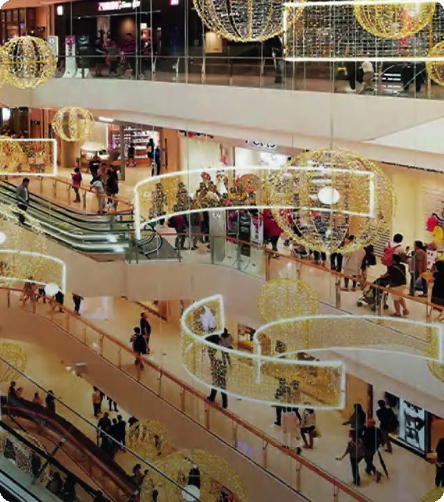
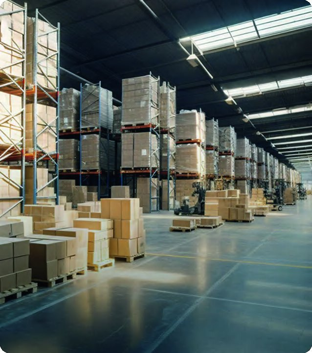
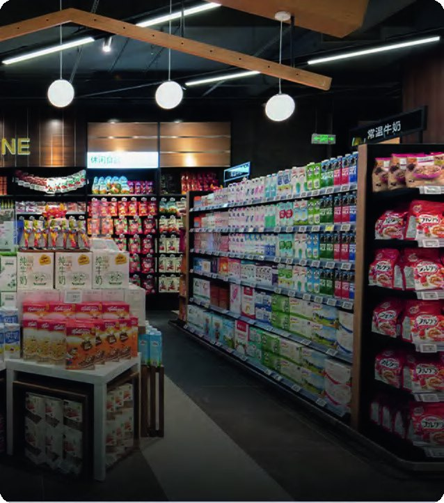
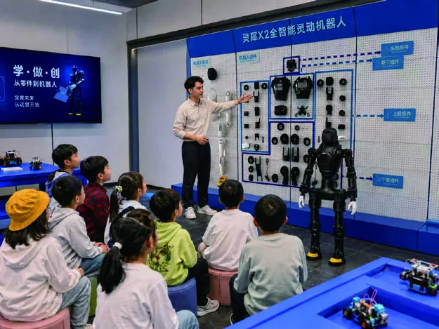
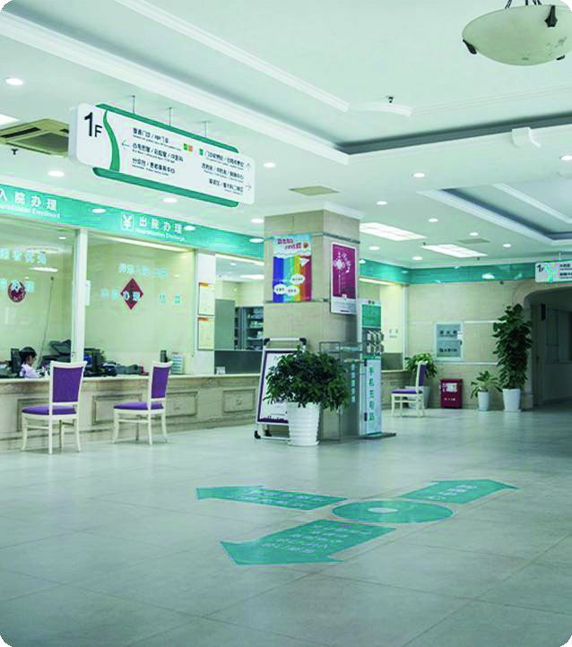

Aplicaciones
Robots que ya trabajan en entornos reales
Atención al público, intralogística, limpieza, formación, salud e inspección. Te ayudamos a elegir el robot adecuado para cada tarea y lo ponemos en marcha en tu instalación.

01
Retail y atención al público
Humanoides que reciben, informan y acompañan a clientes y visitantes, y que convierten un espacio comercial en una experiencia de marca.
- Recepción e información en tiendas, hoteles y oficinas
- Promociones y activaciones en el punto de venta
- Acompañamiento de visitantes y guía en showrooms
- Preguntas frecuentes y derivación al personal
Robots para este uso



02
Industria e intralogística
Robots móviles que mueven material entre almacén y línea, y humanoides que manipulan piezas en la planta, sin obras ni cambios en la instalación.
- Transporte de material entre estaciones y almacén
- Traslado de carros y estanterías
- Movimiento de palés en suelo y primer nivel
- Manipulación de piezas y alimentación de máquinas
Robots para este uso



03
Limpieza de grandes superficies
Fregado, aspiración y barrido autónomos para superficies amplias, con rutas programadas y trabajo en horarios sin público.
- Supermercados y centros comerciales
- Estaciones, aeropuertos y edificios de oficinas
- Naves industriales y almacenes
- Aparcamientos y zonas semiexteriores
Robots para este uso



04
Educación, investigación y eventos
Plataformas abiertas para enseñar robótica e inteligencia artificial, desarrollar aplicaciones propias y protagonizar ferias y presentaciones.
- Docencia universitaria y formación profesional
- Investigación en robótica humanoide y manipulación
- Desarrollo de aplicaciones con SDK y simulación
- Ferias, presentaciones y actuaciones
Robots para este uso



05
Salud y asistencia
Interacción guiada y apoyo informativo en centros sanitarios y residencias, y limpieza autónoma de pasillos y zonas comunes.
- Recepción y orientación de pacientes y visitas
- Apoyo informativo y acompañamiento no clínico
- Limpieza de pasillos y zonas comunes
Robots para este uso

06
Inspección y seguridad
Un cuadrúpedo con ruedas que recorre exteriores, rampas y escaleras para inspeccionar instalaciones y hacer rondas de vigilancia.
- Rondas de inspección en plantas y aparcamientos
- Vigilancia de perímetros y zonas exteriores
- Recorridos por terreno irregular y escaleras
- Reparto en recintos y última milla
Robots para este uso

¿Tienes una tarea que quieres automatizar?
Cuéntanos tu caso y te orientamos sobre qué aplicación robótica puede encajar mejor en tu empresa.